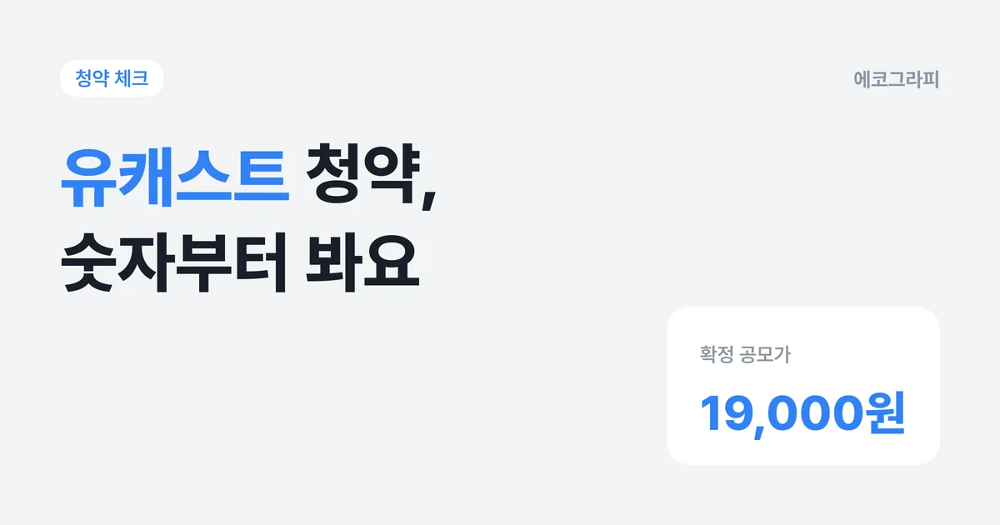
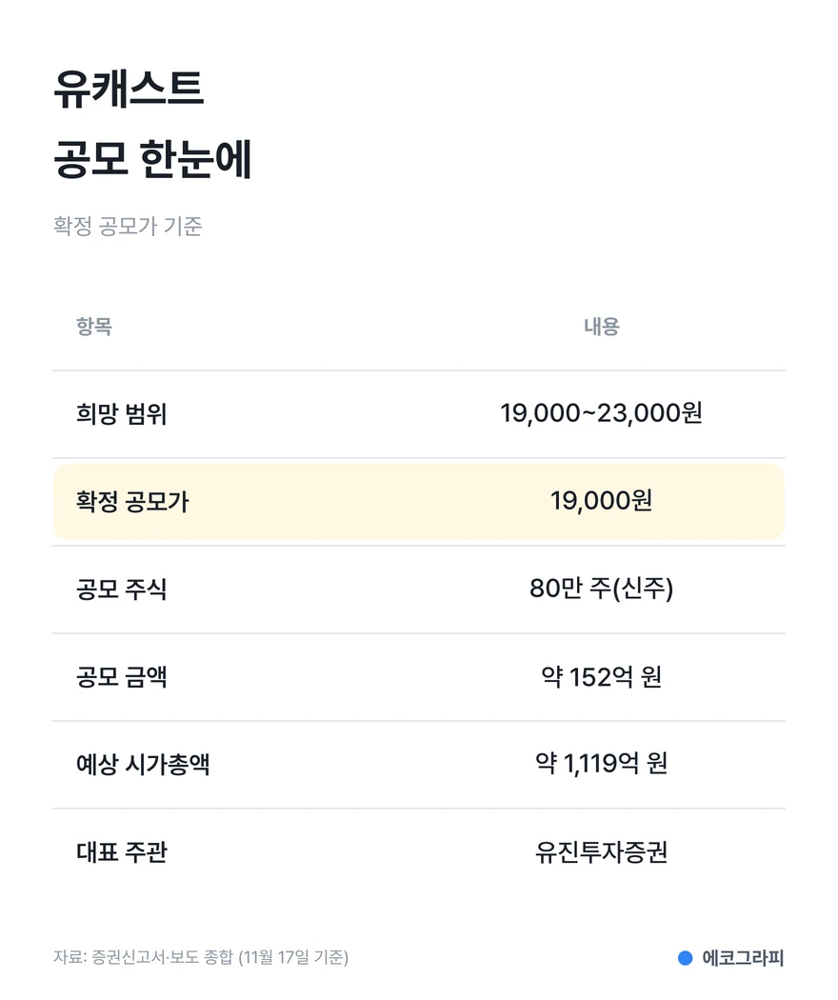
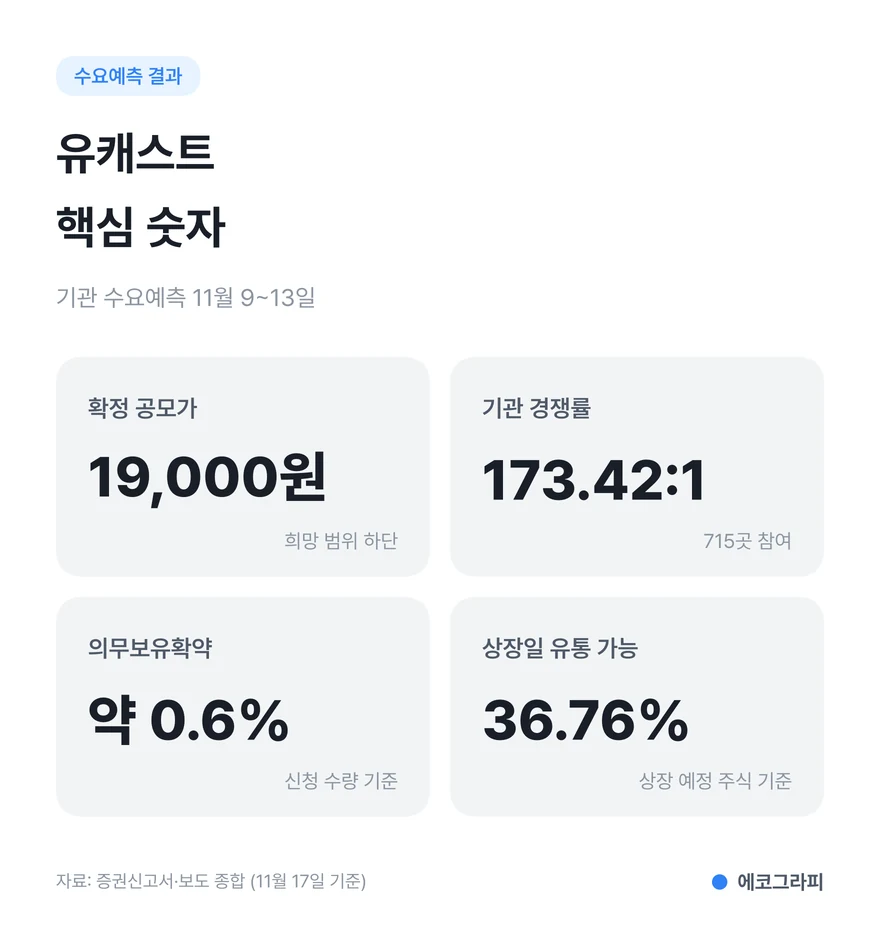
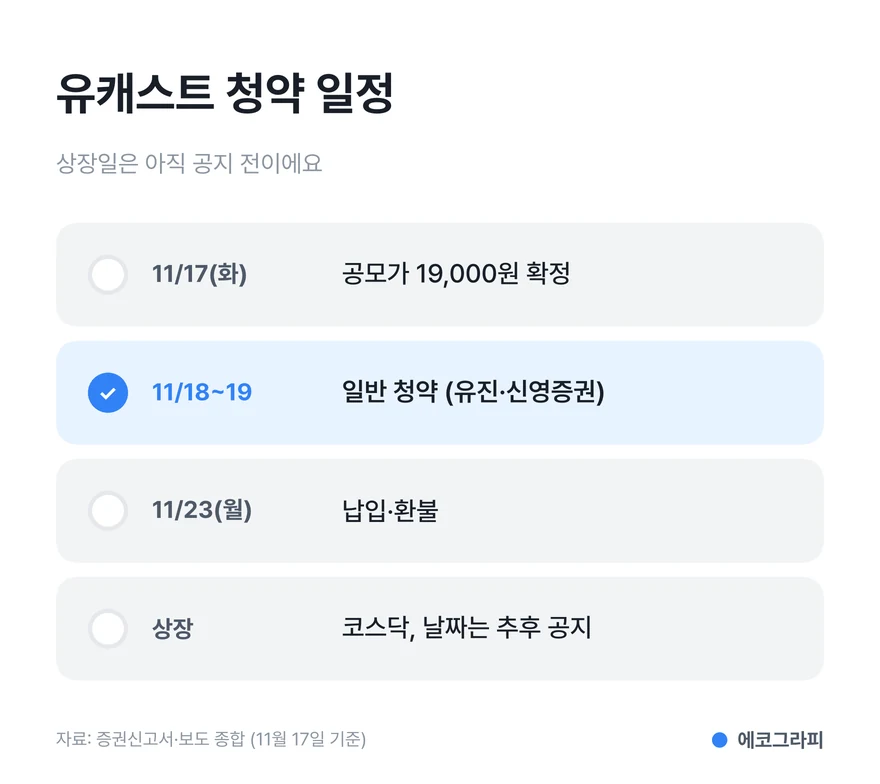

공모주 청약이 처음이라면 공모주 청약 처음 하는 법을 먼저 읽어 보세요.
2011년에 세워진 이동통신 장비 회사예요. 기지국·코어망·운영 소프트웨어를 직접 만들어서, 군대·재난 현장·공공시설처럼 따로 쓰는 5G 통신망(특화망)을 깔아 줘요. 차량·배낭·드론에 싣는 이동형 기지국도 있고, 최근엔 조선소 같은 산업 현장으로 넓히고 있어요. 코스닥에 상장할 예정이에요.

청약 전에 꼭 볼 숫자는 세 가지예요.

참고: 일부 기관은 공모가가 기관 평가와 차이가 크다며 비판적인 의견을 냈다는 보도도 있어요. 숫자를 직접 보고 판단하는 게 중요해요.
청약은 11월 18~19일, 유진투자증권·신영증권에서 할 수 있어요. 납입·환불은 23일이에요. 상장일은 아직 정해지지 않았어요.

균등배정에 필요한 최소 증거금은 최소 청약 수량 × 공모가 × 50%로 계산해요. 최소 청약 수량이 보통처럼 10주라면 10주 × 19,000원 × 50% = 95,000원이에요. 증권사마다 수량 단위와 수수료가 다를 수 있으니 청약 화면에서 꼭 확인하세요.
함께 청약 예정이던 OLED 소재 회사 에스에프씨는 수요예측에서 희망 범위(31,600~36,100원)보다 한참 낮은 가격에 주문이 몰리자 코스피 상장을 철회했어요. 내년 초 다시 도전할 계획이라고 해요. 올해 상장한 공모주 상당수가 공모가 아래로 내려가면서 기관이 공모주 투자를 줄였다는 분석이 나와요.
청약 전 체크: ① 확정 공모가 위치 ② 의무보유확약 비율 ③ 상장일 유통 물량 ④ 내가 넣을 증거금과 환불일. 이 네 가지를 먼저 적어 보세요.
기관들이 생각한 적정 가격이 희망 범위보다 낮았다는 뜻이에요. 그 자체로 상장 후 주가를 알 수는 없지만, 수요가 강하지 않았다는 신호로 많이 읽혀요.
상장 첫날부터 기관이 팔 수 있는 물량이 많다는 뜻이에요. 상장 초반 가격 변동이 클 수 있어서 유통 가능 물량과 함께 확인해요.
보통 한 종목은 한 증권사에서만 청약할 수 있어요(중복 청약 제한). 정확한 기준은 주관사 공지를 확인하세요.
배정되지 않은 증거금은 23일에 청약한 계좌로 돌아와요.
※ 2026년 11월 기준으로 정리한 글입니다. 공모 일정과 공모가는 증권신고서 정정으로 바뀔 수 있으니 청약 전 주관 증권사 공지와 DART 증권신고서를 꼭 확인하세요. 특정 종목의 청약·매수·매도 권유가 아닙니다.